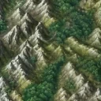
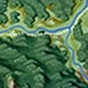
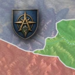
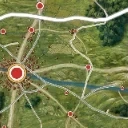
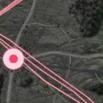
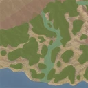

Zum Entwurf docs/superpowers/specs/2026-08-11-ansichts-kacheln-design.md · gebaut, live hinter ?layerPanelActive=1
css/ gelesen, die Bilder aus
icons/layer-tiles/. Was du unten siehst, ist nicht nachgebaut — es ist dasselbe.
Nur das Drumherum (Kartenkasten, Such- und Verweisknöpfe, der Zoom) ist Kulisse.
| Bild | Ansicht | Herkunft |
|---|---|---|
 | Nur Kartenone | Aufnahme · Gebirge, 628/628, Zoom 5 |
 | Originaloriginal | Aufnahme · alte Karte, 660/476, Zoom 5 |
 | Politischpolitical | vom Owner gestaltet |
 | Standardderegraphic | Aufnahme · Straßen + Orte, 534/555, Zoom 5 |
 | Kraftlinienpowerlines | Aufnahme · Linie + Nodix, 534/555, Zoom 5 |
 | Landschaftenecosystem | vom Owner gestaltet |
Kein Bild trägt einen Namen. Aufgenommen wird eine Allowlist von Karten-Ebenen —
die Namens-Ebenen stehen nicht darin. Werkzeug und Fallen: tools/layer-tiles/.
display lässt sich nicht überblenden: das Raster wird erst sichtbar geschaltet
und im nächsten Bild angeblendet. Und die Kachel kommt erst nach der Ausblende zurück — sonst wäre
der Bund kurz doppelt hoch und der Suchknopf ruckte.